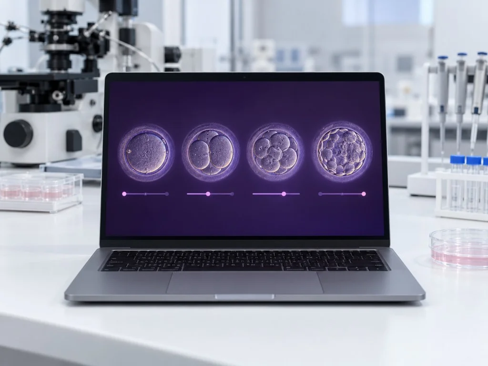

검체를 확인하는 매칭 시스템부터
배아를 관찰하는 AI 분석까지
진료에 필요한 기술을 갖춥니다.
배양 과정을 기록하고 검체를 확인하며,
치료 단계마다 상태에 맞춰 판단합니다.
난임치료
알아보기
배아의 발달을 살피는 데 필요한 장비와
관리 절차를 함께 준비했습니다.
검체 식별 관리
배아 불일치 방지
전자 매칭 시스템
채취한 난자와 정자, 배아의 식별 정보를
무선 태그로 대조하는 전자 매칭 장치를 사용하여,
배양 중 검체가 이동한 이력을 확인합니다.
영상으로 확인하는 배아
AI를 활용한 배아
분석 솔루션
촬영한 배아의 발달 양상을 AI로 분석해,
의료진이 이식할 배아를 평가하는 데 참고 자료로 사용합니다.

장비를 다루는 기술에
연구실의 관찰 경험을 더합니다.
배양실과 진료실이 협의하는
난임 진료팀
검체 확인부터 수정과 배양, 이식에 이르기까지
담당 의료진과 배양 연구원이 정보를 나누며
현재 상태에 필요한 진료를 검토합니다.
진료를 마친 분들의 소식입니다.
상호 : 민트클 ㅣ 대표자 : 김진수 ㅣ 사업자등록번호 : 266-07-03678
주소 : 테헤란로 123 민트클빌딩 5층 ㅣ 대표번호 : 010-4894-4905
Copyright © 2026 BOMNAL. All rights reserved.
상호 : 민트클 ㅣ 대표자 : 김진수
사업자등록번호 : 266-07-03678
주소 : 테헤란로 123 민트클빌딩 5층
대표번호 : 010-4894-4905
Copyright © 2026 BOMNAL. All rights reserved.
BOMNAL WOMEN'S CLINIC